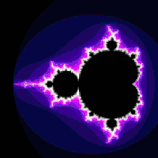

Part 1: About Time!
When dealing with musical applications, we need to pay special attention to the aspect of timing. More so than in other channels like visual information, humans are sensitive to sound - and can detect discrepancies at millisecond resolutions.
This means that when developing music applications, we need to make sure that we can accurately schedule sounds when we want them to happen, and have the computer reliably play back those sounds when we expect them to.
The Problem
If you’ve never used p5.js before, a basic program (called a p5.js “Sketch”) generally follows the following structure:
var xpos = 0;
// Runs only once, when the page loads
function setup() {
createCanvas(windowWidth, windowHeight); // Canvas size fills its container
}
// Runs after setup, and repeats 60 times a second by default
function draw() {
background(255, 0, 0); // Paint the background red (RGB color)
ellipse(xpos, height/2, 50, 50); // Draw an ellipse with width = height = 50
xpos = (xpos + 1) % width; // Increase the x-position on each loop
}
The setup and draw functions are special p5.js functions which are used typically for program initialization and animation respectively. In this example, the setup function simply creates a blank canvas, and the draw function draws a circle to the screen, updating its x-coordinate on every cycle.
The output of this program looks like this:
A typical p5.js program, known in the p5 community as a "sketch".
To control how frequently the draw loop repeats, we can set the frame rate of the draw loop using the frameRate() function. Keeping our eyes on the goal of making music, this implies that we can get some sort of regular clock/timer using the draw loop. For example, if we wanted to make a metronome app that beeps at 60 beats-per-minute (BPM), we might do the following:
var synth;
var bpm = 60; // Metronome ticks at 60 beats-per-minute
function setup() {
createCanvas(100, 100);
synth = new p5.PolySynth();
frameRate(60 / bpm); // Frequency = 60 seconds / beats-per-minute
}
// Repeats 60 times a second by default
function draw() {
background(255); // Paint the background white
synth.play(440); // Play a short note at 440Hz
}
However, there’s a problem with this approach, which is that the draw loop was not designed for timing-critical applications. Therefore, the frame rate we set may not be strictly adhered to - the loop may run slower if for example the draw loop has a large amount of graphics to render or your browser is running many active tabs.
The Solution
To handle the need for precise audio scheduling, the p5-sound library offers an alternative scheduling mechanism called the SoundLoop. Using the SoundLoop, we can build a metronome as before, with just a slight change in code:
var synth;
var sloop;
var loopInterval = 1; // Loop interval of 1 second corresponds to 60 BPM
function setup() {
noCanvas();
synth = new p5.PolySynth();
// Create a SoundLoop which calls mySoundLoop every loopInterval seconds
sloop = new p5.SoundLoop(mySoundLoop, loopInterval);
sloop.start();
}
function mySoundLoop(cycleStartTime) {
// Play a note at 440Hz, velocity of 1 (full volume),
// The note is scheduled to begin at the start of each cycle,
// and is held for a duration of 0.5s
synth.play(440, 1.0, cycleStartTime, 0.5);
}
Notice that in this case, there is no more draw loop - the draw loop is optional if we are only using sound, but in many cases it will be useful to have both the SoundLoop and draw loop, to handle audio and visuals respectively.
We can now compare the two approaches by listening to both metronomes together in the same sketch:
Comparing the timing accuracy of the draw loop versus the SoundLoop. The loops don't necessarily start in sync; what's important is to observe the consistency in their individual cycles. Scroll away or switch focus to a different tab to see an obvious difference in behaviour!
Notice that when you first start the sketch, the two tones are in sync, but after some time they start to have a perceptible drift in timing, especially if you scroll away or switch to a different tab (the browser allocates fewer resources to unfocused tabs, so the draw loop is neglected). The difference may be more or less obvious depending on your processor speed, but in general the SoundLoop will always be more reliable for scheduling sounds than the draw loop. This is because the SoundLoop is built on Web Audio clock, which you can find out more about in this article by Chris Wilson.
Time Management In Practice
So now, we have some inkling of how to build p5.js sketches with accurate timing information. But how do we go from the simple metronome example to that supercalifabuloustic-interactive-musical-journey you have in your head?
As is often the case, it depends.
It depends on what type of interactions you need from your program, between the user and the sound or between the sound and other components of the program. The best way to see this is by looking at some examples.
Instantaneous Reaction
One of the most common use-cases for audio in programs is just as instantaneous feedback for user interactions. Whether you’re working on a 2018 revamp of Space Invaders which goes ZZZZOOP on every laser fired, or a simple navigation menu whose buttons BOOP, you’re going to want to set up your sounds to be triggered instantaneously based on certain events.
In this basic type of scenario, there is no need for the SoundLoop or any advanced scheduling. All we need to do is simply instantiate our sound object in setup, and play that sound in the trigger-event’s callback function.
We will explore such a scenario in the context of creating a virtual piano application. For our virtual piano, we will use a PolySynth object to produce sounds, and the keyPressed and keyReleased events to start and stop the sounds. The relevant part of the code looks like this:
var synth;
var keyOrder = "ASDFGHJKL";
var keyStates = [0,0,0,0,0,0,0,0,0];
function keyPressed() {
keyIndex = keyOrder.indexOf(key);
// Check if valid note key pressed
if (keyIndex >= 0) {
// Update key state
keyStates[keyIndex] = 1;
// Play synth
midiNoteNumber = baseNote + keyIndex; // 0-127; 60 is Middle C (C4)
freq = midiToFreq(midiNoteNumber);
synth.noteAttack(freq, velocity, 0);
}
}
function keyReleased() {
keyIndex = keyOrder.indexOf(key);
// Check if valid note key pressed
if (keyIndex >= 0) {
// Update key state
keyStates[keyIndex] = 0;
// Stop synth
midiNoteNumber = baseNote + keyIndex; // 0-127; 60 is Middle C (C4)
freq = midiToFreq(midiNoteNumber);
synth.noteRelease(freq, 0);
}
}
And the result of that would be something like this:
A simple virtual piano program. Type "ASDFGHJKL" to play!
Playing A Sequence of Notes (Static Scheduling)
In another situation, directly relevant to interactive and algorithmic music composition, we might want to play a sequence of notes.
For example, let's say you want your sketch to play Twinkle Twinkle Little Star. First, you need to figure out how to represent your sequence of notes. There are a great many ways to do this, but perhaps one of the most intuitive representations is to just list out all the notes along with their velocity and timing information, like so:
var song = [
// Note pitch, velocity (between 0-1), start time (s), note duration (s)
{pitch:'E4', velocity:1, time:0, duration:1},
{pitch:'D4', velocity:1, time:1, duration:1},
{pitch:'C4', velocity:1, time:2, duration:1},
{pitch:'D4', velocity:1, time:3, duration:1},
{pitch:'E4', velocity:1, time:4, duration:1},
{pitch:'E4', velocity:1, time:5, duration:1},
{pitch:'E4', velocity:1, time:6, duration:1},
// Rest indicated by offset in start time
{pitch:'D4', velocity:1, time:8, duration:1},
{pitch:'D4', velocity:1, time:9, duration:1},
{pitch:'E4', velocity:1, time:10, duration:1},
{pitch:'D4', velocity:1, time:11, duration:1},
// Chord indicated by simultaneous note start times
{pitch:'C4', velocity:1, time:12, duration:2},
{pitch:'E4', velocity:1, time:12, duration:2},
{pitch:'G4', velocity:1, time:12, duration:2}
];
Then, you could use a for-loop to schedule all the notes to occur at their respective timestamps:
for (var i=0; i<song.length; i++) {
var note = song[i];
synth.play(note.pitch, note.velocity, note.time, note.duration);
}
This works, but an important thing to realize is that once you’ve scheduled a sound to occur, you can’t stop it, alter it, or interact with it anymore. This program runs through the entire loop almost immediately, locking all current and future notes into the scheduler so there's no going back.
Imagine a case where you have composed a thumping ‘60s dance hit in your sketch, and you send it to your friend Tracy. Tracy opens up your sketch and turns it on, enjoying the music until she is rudely interrupted by the Fun Police, who remind her that this is a library and you can't play music here. The volume buttons on Tracy’s laptop are broken, and the strange flavor of Linux she uses doesn’t have a sound control panel. She tries to pause the music, but to her dismay she realizes that this isn’t possible because all the notes have already been scheduled to occur the moment she started the sketch. Ashamed, she hangs her head and tells them that she’s sorry, but you can't stop the beat.
While your users may never face this exact situation, in many cases you might realize that you don’t actually want to schedule all notes right away, and in the case of interactive music we need to be able to alter, add and remove notes on the fly according to your interactions. To add this interactivity, we turn to our trusty ol’ SoundLoop.
Playing A Sequence of Notes (Dynamic Scheduling)
Earlier, we touched briefly upon the usefulness of the SoundLoop without going into too much detail. Let's look a little more closely!
The SoundLoop provides users with a way to access the Web Audio Clock for accurate audio scheduling. Recall the example from before:
var synth;
var sloop;
var loopInterval = 1; // Loop interval of 1 second corresponds to 60 BPM
function setup() {
noCanvas();
synth = new p5.PolySynth();
// Create a SoundLoop which calls mySoundLoop every loopInterval seconds
sloop = new p5.SoundLoop(mySoundLoop, loopInterval);
sloop.start();
}
function mySoundLoop(cycleStartTime) {
// Play a note at 440Hz, velocity of 1 (full volume),
// The note is scheduled to begin at the start of each cycle,
// and is held for a duration of 0.5s
synth.play(440, 1.0, cycleStartTime, 0.5);
}
Some important things to take note of:
- We need to instantiate a SoundLoop object.
- The SoundLoop constructor takes in two arguments: the callback function, and the loop interval.
- The callback function is called regularly according to the chosen loop interval, and there is a cycleStartTime parameter passed into each callback, which we should use as a landmark to do our audio-scheduling against.
The concept of cycleStartTime deserves a bit more explanation, because it is tricky to understand at first. The cycleStartTime gives us the ideal time that the current cycle of the SoundLoop is supposed to occur at.
For example, we want our SoundLoop to repeat at 1-second intervals, so if we start at time 0 we want the SoundLoop to repeat at time 1, 2, 3, 4, and so on. In practice, the SoundLoop code may be executed at a slightly different time, perhaps at times 1.07, 1.98, 3.11, 4.01. Therefore, whenever we schedule audio within a SoundLoop, we should always schedule against the cycleStartTime instead of the actual time that the code is running at. This ensures that even though the program execution time may deviate slightly from the plan, our scheduled audio will always be correct because we are using the ideal cycleStartTime.
Okay, enough chat! How does all of this look in practice?
Using the SoundLoop to play our sequence of notes, things get a bit more complicated than before. Instead of a using a for-loop to loop through the array, we use the SoundLoop as though it were a while-loop. We can change the interval between loop iterations to match the duration of each note and try to do something like this:
function soundLoop(cycleStartTime) {
var note = song[noteIndex];
synth.play(note.pitch, note.velocity, cycleStartTime, note.duration);
this.interval = note.duration; // Hold off the next cycle until this note is done
noteIndex++;
if (noteIndex >= song.length) {
this.stop(); // Stop the SoundLoop if we've reached the end of the song
}
}
But if you look closely (or try running the example yourself), you will realize that this doesn't work because each cycle plays only one note, and notes that we intended to occur in unison (like a chord) get staggered out across multiple time steps instead.
Unfortunately, there is no quick and easy solution to this, but one approach which turns out to be useful in many cases is to:
- Separate each note into attack and release events (also known as note-on and note-off events)
- Use time elapsed since the previous event to denote temporal information instead of using start time + duration.
Using this new representation, we can write out another sequence of notes - this time for Mary Had A Little Lamb (surprise! It's actually the same song as before):
var song = [
// pitch, velocity (between 0-1), time since previous event (beats), type (1:ON or 0:OFF)
{pitch:'E4', velocity:1, timeSincePrevEvent:0, type:1},
{pitch:'E4', velocity:1, timeSincePrevEvent:1, type:0},
{pitch:'D4', velocity:1, timeSincePrevEvent:0, type:1},
{pitch:'D4', velocity:1, timeSincePrevEvent:1, type:0},
{pitch:'C4', velocity:1, timeSincePrevEvent:0, type:1},
{pitch:'C4', velocity:1, timeSincePrevEvent:1, type:0},
// ...
// Omitted for brevity
// ...
// Chord indicated by multiple notes being ON at the same time
{pitch:'C4', velocity:1, timeSincePrevEvent:0, type:1},
{pitch:'E4', velocity:1, timeSincePrevEvent:0, type:1},
{pitch:'G4', velocity:1, timeSincePrevEvent:0, type:1},
{pitch:'C4', velocity:1, timeSincePrevEvent:2, type:0},
{pitch:'E4', velocity:1, timeSincePrevEvent:2, type:0},
{pitch:'G4', velocity:1, timeSincePrevEvent:2, type:0},
];
And now, we can use the same idea of looping through each element of the array using the SoundLoop, being careful to treat each note-on or note-off event differently and changing the interval according to the next timeSincePrevEvent.
var eventIndex = 0;
function soundLoop(cycleStartTime) {
var event = song[eventIndex];
if (event.type == 1) {
synth.noteAttack(event.pitch, event.velocity, cycleStartTime);
} else {
synth.noteRelease(event.pitch, cycleStartTime);
}
// Prepare for next event
eventIndex++;
if (eventIndex >= song.length) {
this.stop();
} else {
var nextEvent = song[eventIndex];
// This cycle will last for the time since previous event of the next event
this.interval = nextEvent.timeSincePrevEvent;
}
}
Whew. That was a bit of effort just to play a couple of notes, wasn't it? But the important thing to realize is that this is a far more powerful way of playing notes than scheduling everything at once. When we use the SoundLoop, each note only gets scheduled when it is due to be played, which means that we have the power now to interact with the music and change it as it is being produced - and that is where all the fun begins.
Playing a sequence of notes using a SoundLoop, which allows us to start, stop, and even alter playback (eg. changing tempo) as it happens.
Synchronizing Audio and Visuals
The last topic we will look at in this tutorial is how to synchronize audio and visuals.
One of the really exciting things about working with JavaScript and in particular, p5.js, is that you have a wealth of features to play with. Even if the focus of your sketch is on musical content, it often augments the experience of your users when you add a visual component to complement the sounds you create.
A pretty fun example of a visualization you could do is to visualize each note that your algorithm creates, by adding new components to the screen every time a note is struck.
The first way we might think of doing this is to simply add drawing functions into your SoundLoop, but that tends to not work out so well because animations generally require a higher frame rate than the SoundLoop would need. Therefore, a better way is keep audio and visual components separate, using the SoundLoop for sound and the draw function for visuals. Then to synchronize between the two loops, there will often need to be some global program states which the two loops interact with to pass information back and forth.
In the following example, we have a ParticleSystem class (borrowed from the p5.js ParticleSystem example) which keeps track of individual Particles which each represent a note.
In the SoundLoop, each time we play a new note we also add a new particle to the system:
function soundLoop(cycleStartTime) {
// Pick a random note, note octave based on mouse height
var pitchClass = random(pentatonic_scale);
var octave = baseOctave + heightLevel;
var currentNote = pitchClass + str(octave);
// Play sound
var velocity = 1; // Between 0-1
quaverSeconds = this._convertNotation('8n'); // 8th note = quaver duration
synth.play(currentNote, velocity, cycleStartTime, quaverSeconds);
// Add a particle to visualize the note
var pitchClassIndex = pentatonic_scale.indexOf(pitchClass);
var xpos = width / (pentatonic_scale.length * 2) + pitchClassIndex * width / pentatonic_scale.length;
var ypos = height - heightLevel * height / numOctaves;
system.addParticle(xpos, ypos);
}
In the draw function, all we need is a single call to run the system (which takes care of updating the particle positions and drawing the particles):
function draw() {
// ... Omitted
// Update particle system
system.run();
// ... Omitted
}
The result is this neat little interactive-music demo:
A simple interactive program demonstrating audio and visuals occuring in sync. Notes are produced randomly, but you can move your cursor around the sketch to transpose up and down octaves.
Extra Credit: Step Sequencer
Using all of the concepts that we have learned, we now have what it takes to build something practical: A step sequencer. Step sequencers are a relatively modern kind of musical instrument used by electronic musicians to easily create beats and melodic patterns.
The code used to create this example builds upon the same ideas we have already seen so we won't go into the code in detail here, but feel free to check out the full code and remix it into your own creations!
A step sequencer. Click on the tiles to set/unset notes, and hit RUN to get the groove going!
What's Next?
We've reached the end of this lesson, but don't stop here!
Grab a coffee, take a break, and come back for Part 2 of this tutorial series, where we'll explore cool ideas and groovy examples from the world of algorithmic composition!
Part 2: Algorithmic Composition
The Building Blocks of Music
This is a note.
Tap anywhere on the canvas to play a note! Horizontal position controls pitch, vertical position controls velocity.
Notes are characterized by their pitch, velocity and timing information.
Musical pitch refers to how high- or low-pitched the note sounds. This characteristic comes from the oscillating frequency of the sound wave producing that note.
Frequency is a continuous value, which means that 440Hz and 440.00001Hz are both equally valid, and there are an infinite number of possible pitch frequencies. However, Western music typically restricts itself to a particular subset of standard pitch frequencies, and we give names to these standard frequencies such as “A3”, “C5”, “F#4” and so on.
Pitch names like “D#4” may be familiar to you depending on how comfortable you are with music theory, but if you don’t know your sharps from your flats, fret not! There is an alternate naming scheme called MIDI note numbers, which simply labels each standard frequency with a number which increases as the pitch gets higher.
By using MIDI note numbers, we don't need to remember specific pitch frequencies or formulae; MIDI numbers also possess easy mathematical shortcuts as well - for example, to go up or down an octave we simply add 12 to the MIDI note!
Easy, right?
MIDI note numbers make it easier for digital musicians to work with musical pitches. Try clicking on each of the notes to get a feel of how MIDI numbers affect pitch! (Depending on your speakers/headphones, certain low- or high-frequency pitches may not sound so clear. Notes around MIDI number 70 generally show up clearly on laptop speakers.)
The velocity of a note indicates how hard a note is struck. Primarily, this influences how loud the note is played, but depending on the implementation of your synthesizer’s instrument voice, velocity may also have an effect on timbre and other sound characteristics. For the purpose of this tutorial, we can simply think of velocity as the same thing as volume.
The last bit, timing information, needs to include both the attack and release times for that particular note (which can equivalently be represented as onset time and duration). This timing information can be expressed in terms of seconds or in musical time, which uses fractions relative to a composer-defined beats per minute (BPM).
With just these three simple properties, we actually have everything we need to get started making music. We can start with a single note:
var synth;
function setup() {
noCanvas();
synth = new p5.PolySynth();
var midiNoteNumber = 70;
var freq = midiToFreq(midiNoteNumber); // Convert MIDI note to frequency
// Play note number 70 with velocity 1, starting now, for a duration of 1s
synth.play(freq, 1.0, 0, 1);
}
And we can add more synth.play() functions to produce a series of notes that generate a song (see Part 1: About Time for a better way to do this):
synth.play(midiToFreq(60), 1.0, 0, 1);
synth.play(midiToFreq(62), 1.0, 1, 1);
synth.play(midiToFreq(64), 1.0, 2.5, 1);
synth.play(midiToFreq(65), 1.0, 5, 1);
// ... and so on
Which works, but it quickly becomes very tedious to type out every note one by one. In the age of computers and interactive programs, why should we do all the hard work? Can't we design computer programs that compose and play music for us?
It turns out, yes we can.
Dice Music
An algorithm is a set of steps that can be followed to perform a certain task (a common analogy for this is a cooking recipe). In our case, we want to use algorithms which can be followed by a computer so that the computer may compose new music for us. However, algorithms are not limited only to computer programs, and humans have in fact been using algorithms to compose music for centuries!
The Musikalisches Würfelspiel (German for “musical dice game”) was popular in the 18th century for adding an element of chance to music composition. Typically, composers would prepare a set of musical phrases and use a dice to randomly put them in sequence.
In its simplest form, the algorithm might look something like this:
- Prepare a palette of musical phrases or notes which we can choose from.
- Start with an empty song.
- If the song is shorter than your desired length:
- Randomly select a piece of music from the palette, and add it to the song.
- Repeat Step 3.
- Your song is done, enjoy the music!
We can do something like this quite easily, by using p5 to randomly pick out a sequence of notes to construct a song. However, it turns out that randomly picking note pitches from anywhere in the spectrum sounds quite bad, and we can do better if we instead pick notes from a specific scale (subset of pitch classes).
In the example below, we use the Major Pentatonic scale, but there are a lot of different possible scales we can choose from (see gleitz’s gist for a list of scales in convenient JavaScript array format), and depending on the context of your composition you may want a scale to help convey a specific mood.
An example of using randomness in music composition. Notes are produced randomly from the Major Pentatonic scale, but you can move your cursor around the sketch to transpose up and down octaves.
Fractal Music
The idea of fractals first emerged from the field of mathematics, describing a class of infinitely complicated objects possessing self-symmetry at different scales. This definition itself sounds infinitely complicated, but in fact it’s relatively easy to understand the basics (we leave the actual mathematics for another time!) once we look at some examples.
Let’s go ahead and do that right away. Perhaps the most popular example of a fractal is the Mandelbrot set, from which the following visualization is produced:
There are two main points of interest that we can pick out from the earlier definition:
- Infinitely complicatedThankfully, this doesn’t mean that fractals are impossible to understand. What it actually means is that a fractal is an infinite object, which in our case we can think of fractals as something which can generate new musical content forever. How wonderful!
- Self-symmetryThis is more easily seen than described: In the example of the animated visualization of the Mandelbrot set above, we see that the Mandelbrot set is actually self-similar in increasingly small scales, so that when you zoom in enough you eventually see the same patterns emerge.
These two properties of fractals tend to create interesting patterns, which makes them popular subjects for generating art. This more often tends to be visualizations of fractals than sonification (take a look at Dan Shiffman’s excellent fractals lesson on The Nature of Code), but we can just as well convert fractals to music, by mapping a fractal definition to musical information such as pitch, rhythm, or structure.
Let’s try to create our own fractal now!
To generate fractals, we can use something called a Lindenmayer System, or L-System for short. Our L-System will require three things:
- A set of valid symbols
- A set of production rules of transforming each symbol into other symbols
- An initial sequence of symbols to start from
For simplicity, let’s say we use a C-major triad as our set of valid symbols. We would have:
Valid symbols: C, E, G
We then need to define our production rules to transform one symbol into a new symbol(s). For example, an arbitrary set of rules might be:
C => G
E => E, C
G => C, G, E
And we decide to begin with just a single note, C. We then apply the following algorithm:
- Repeat for as many iterations as you like:
- For each note in the previous sequence
- Replace that note with the result of the production rule for that note
- For each note in the previous sequence
Our current algorithm would result in the following:
Iteration 1: C
Iteration 2: G
Iteration 3: C, G, E
Iteration 4: G, C, G, E, E, C
Iteration 5: C, G, E, G, C, G, E, E, C, E, C, G
… and so on.
A simple interactive program demonstrating audio and visuals occuring in sync. Notes are produced randomly, but you can move your cursor around the sketch to transpose up and down octaves.
Markov Music
A simple interactive program demonstrating audio and visuals occuring in sync. Notes are produced randomly, but you can move your cursor around the sketch to transpose up and down octaves.
Genetic Music
A simple interactive program demonstrating audio and visuals occuring in sync. Notes are produced randomly, but you can move your cursor around the sketch to transpose up and down octaves.